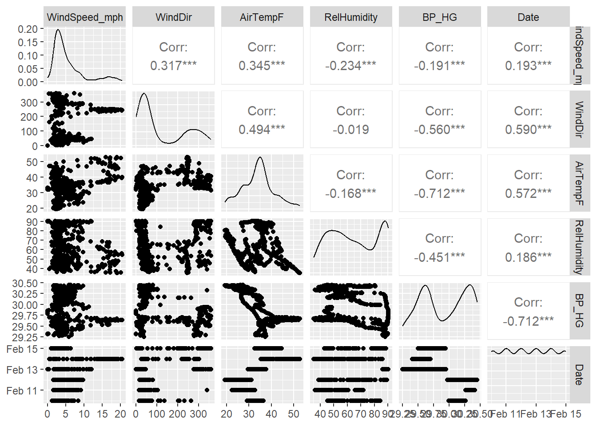
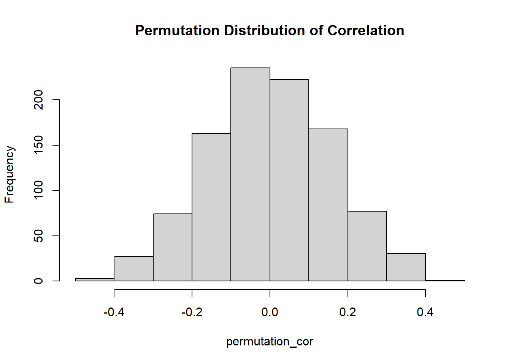

get_rice_data <- function() {
url <- "https://docs.google.com/spreadsheets/d/1Mk1YGH9LqjF7drJE-td1G_JkdADOU0eMlrP01WFBT8s/pub?gid=0&single=true&output=csv"
read_csv( url ) -> rice
rice$H2O_TempF <- (9/5) * rice$H2O_TempC + 32
rice$Rain_cm <- rice$Rain_in * 2.54
rice$Date <- substr(rice[["DateTime"]], 1, nchar(rice[["DateTime"]]) - 11)
rice$Time <- substr(rice[["DateTime"]],
nchar(rice[["DateTime"]]) - 10,
nchar(rice[["DateTime"]]))
is.Date(as.Date(rice$Date))
mdy(rice$Date)
rice$Date <- mdy(rice$Date)
rice$Weekday <-wday(
rice$Date,
label = TRUE,
abbr = TRUE,)
rice <- rice[, !names(rice) %in% c("H2O_TempC")]
rice <- rice[, !names(rice) %in% c("PH_mv")]
rice <- rice[, !names(rice) %in% c("Depth_ft")]
rice <- rice[, !names(rice) %in% c("SpCond_mScm")]
rice <- rice[, !names(rice) %in% c("Rain_in")]
rice <- rice[, !names(rice) %in% c("DateTime")]
rice <- rice[, !names(rice) %in% c("RecordID")]
return(rice)
}Correlation Assignment
Bringing in Data and Libraries
library(tidyverse)── Attaching core tidyverse packages ──────────────────────── tidyverse 2.0.0 ──
✔ dplyr 1.1.4 ✔ readr 2.1.5
✔ forcats 1.0.0 ✔ stringr 1.5.1
✔ ggplot2 3.5.1 ✔ tibble 3.2.1
✔ lubridate 1.9.3 ✔ tidyr 1.3.1
✔ purrr 1.0.2
── Conflicts ────────────────────────────────────────── tidyverse_conflicts() ──
✖ dplyr::filter() masks stats::filter()
✖ dplyr::lag() masks stats::lag()
ℹ Use the conflicted package (<http://conflicted.r-lib.org/>) to force all conflicts to become errorslibrary(dplyr)
library(knitr)
library(kableExtra)
Attaching package: 'kableExtra'
The following object is masked from 'package:dplyr':
group_rowslibrary(lubridate)
library(GGally)Warning: package 'GGally' was built under R version 4.4.2Registered S3 method overwritten by 'GGally':
method from
+.gg ggplot2rice_data <- get_rice_data()Rows: 8199 Columns: 23
── Column specification ────────────────────────────────────────────────────────
Delimiter: ","
chr (1): DateTime
dbl (22): RecordID, PAR, WindSpeed_mph, WindDir, AirTempF, RelHumidity, BP_H...
ℹ Use `spec()` to retrieve the full column specification for this data.
ℹ Specify the column types or set `show_col_types = FALSE` to quiet this message.For this exercise, you will use our beloved Rice Rivers Center data to answer the following questions. Create the standard Quarto HTML document and turn in your results by linking to your GitHub repository.
1.Look up the library GGally; it has a function named ggpairs(). Use that function to plot the atmospheric data from the Rice Rivers Center for the samples collected from 10 February to 15 February.
feb_days <- rice_data %>%
filter(between(Date, as.Date("2014-02-10"), as.Date("2014-02-15")))
feb_days <- feb_days[, !names(feb_days) %in% c("Time")]
feb_days <- feb_days[, !names(feb_days) %in% c("Salinity_ppt")]
feb_days <- feb_days[, !names(feb_days) %in% c("PH")]
feb_days <- feb_days[, !names(feb_days) %in% c("Turbidity_ntu")]
feb_days <- feb_days[, !names(feb_days) %in% c("Depth_m")]
feb_days <- feb_days[, !names(feb_days) %in% c("H2O_TempF")]
feb_days <- feb_days[, !names(feb_days) %in% c("ODO_sat")]
feb_days <- feb_days[, !names(feb_days) %in% c("ODO_mgl")]
feb_days <- feb_days[, !names(feb_days) %in% c("Rain_cm")]
feb_days <- feb_days[, !names(feb_days) %in% c("SurfaceWaterElev_m_levelNad83m")]
feb_days <- feb_days[, !names(feb_days) %in% c("Weekday")]
feb_days <- feb_days[, !names(feb_days) %in% c("Chla_ugl")]
feb_days <- feb_days[, !names(feb_days) %in% c("BGAPC_CML")]
feb_days <- feb_days[, !names(feb_days) %in% c("BGAPC_rfu")]
feb_days <- feb_days[, !names(feb_days) %in% c("PAR")]
ggpairs(feb_days)
2.For those atmospheric data, which pair of variables has the strongest correlation? What is the 95% confidence interval on that correlation coefficient?
The strongest correlation is between Air Temperature and Relative Humidity.
the 95 percent confidence interval is: -0.24589095 -0.08705632
cor.test(feb_days$AirTempF, feb_days$RelHumidity)
Pearson's product-moment correlation
data: feb_days$AirTempF and feb_days$RelHumidity
t = -4.072, df = 574, p-value = 5.315e-05
alternative hypothesis: true correlation is not equal to 0
95 percent confidence interval:
-0.24589095 -0.08705632
sample estimates:
cor
-0.1675608 3.Using the first 40 observations in air temperature and barometric pressure from the Rice Center data set, determine if they are individually distributed as normal random variables.
Air temperate is normally distributed and barometric pressure is individually distributed
first_40_rows <- rice_data[1:40, c("AirTempF", "BP_HG")]
ggplot(first_40_rows, aes(x = AirTempF)) +
geom_histogram()`stat_bin()` using `bins = 30`. Pick better value with `binwidth`.ggplot(first_40_rows, aes(x = BP_HG)) +
geom_histogram()`stat_bin()` using `bins = 30`. Pick better value with `binwidth`.4.Given your findings in the last question, what kind of correlation statistic would be most appropriate for estimating the correlation between this subset of data?
You would run a Spearman’s Rho corrilation.
OG.FG.spearman <- cor.test( first_40_rows$AirTempF, first_40_rows$BP_HG,
method = "spearman" )Warning in cor.test.default(first_40_rows$AirTempF, first_40_rows$BP_HG, :
Cannot compute exact p-value with tiesOG.FG.spearman
Spearman's rank correlation rho
data: first_40_rows$AirTempF and first_40_rows$BP_HG
S = 17109, p-value = 3.553e-05
alternative hypothesis: true rho is not equal to 0
sample estimates:
rho
-0.6049429 5.Look at a qqnorm() plot of the barometric pressure data you used in the previous example. Is there something that “looks” odd with these data? Explain why those data are the way they are.
The data is all skewed towards a lower pressure. This is because all 40 points take place in the same day so results will tend to remain consistent. This also results in the y axis having a small scale.
qqnorm(first_40_rows$BP_HG)
qqline(first_40_rows$BP_HG)6.Using a permutation approach, define the distribution of correlation values between the variables in #3, assuming that the NULL hypothesis is true. Plot these as a histogram and include the observed correlation.
cor_func <- function(x, y) {
cor(x, y, method = "spearman")
}
n_permutations <- 1000
observed_cor <- cor(first_40_rows$AirTempF, first_40_rows$BP_HG, method = "spearman")
permutation_cor <- replicate(n_permutations, {
shuffled_y <- sample(first_40_rows$BP_HG)
cor_func(first_40_rows$AirTempF, shuffled_y)
})
hist(permutation_cor, main = "Permutation Distribution of Correlation")
p_value <- sum(abs(permutation_cor) >= abs(observed_cor)) / n_permutations
print(p_value)[1] 0